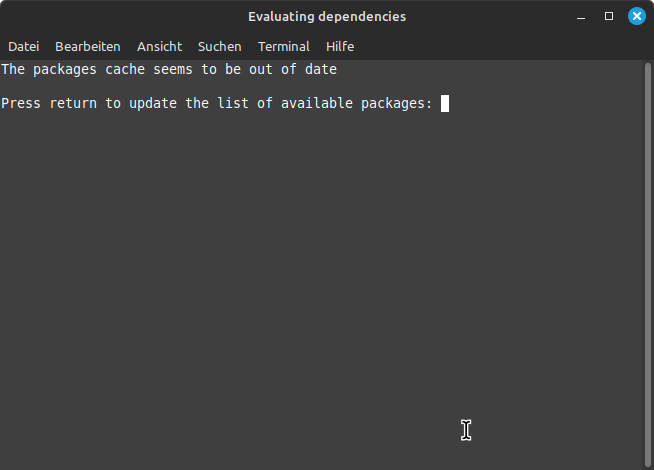
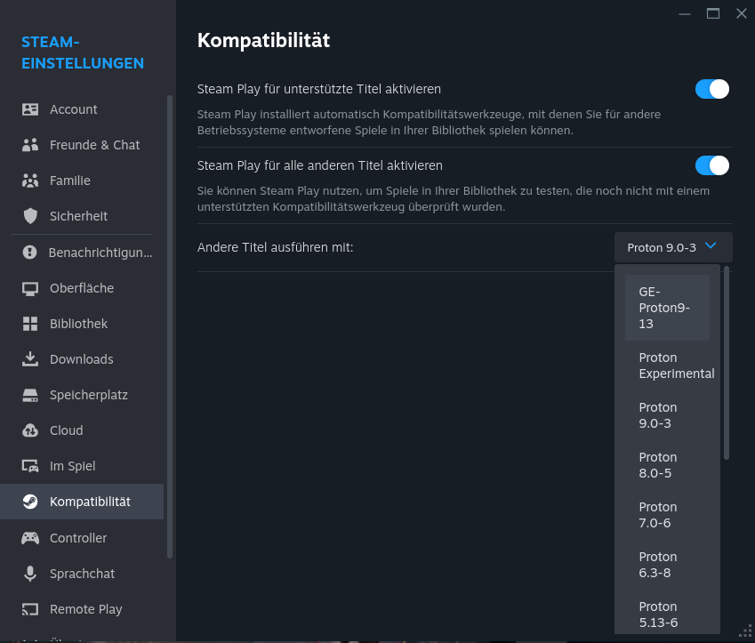
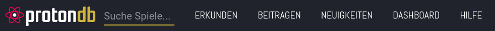
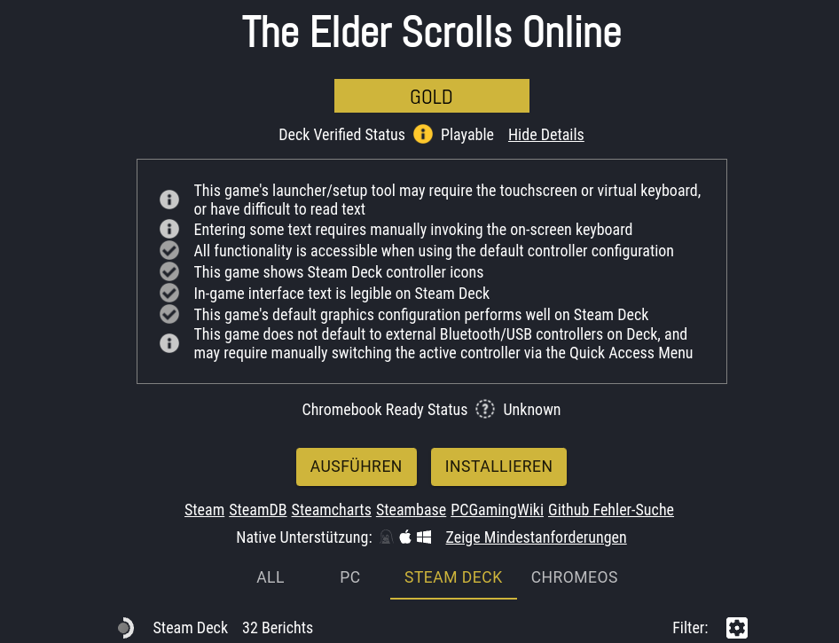
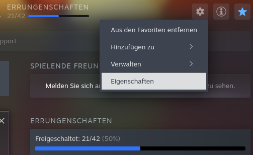
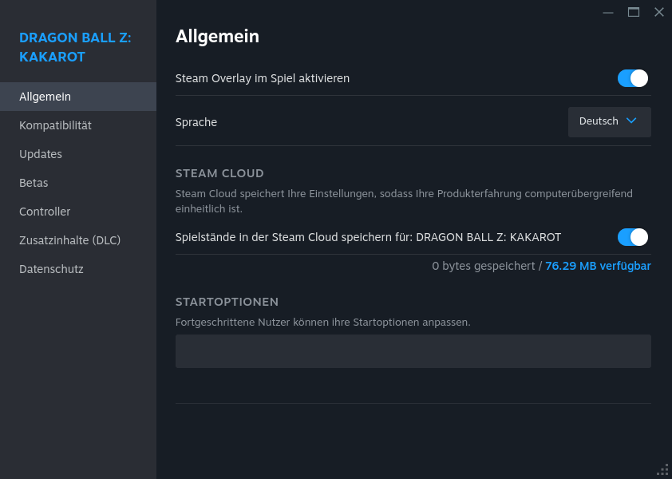
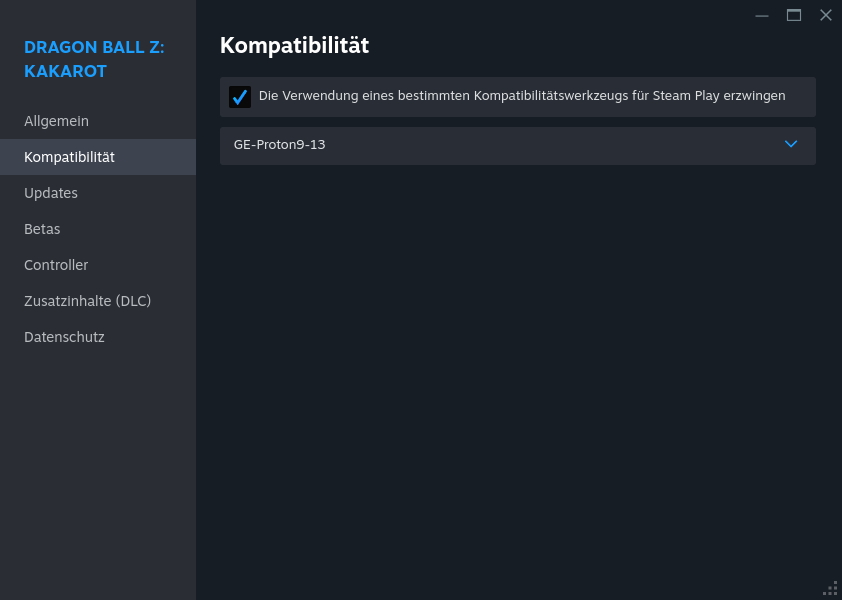

Steam ist die Standard-Plattform für PC-Gaming auf Linux. Mit nativer Linux-Unterstützung und Proton kannst du deine komplette Spielebibliothek spielen.
Es gibt viele Möglichkeiten, Steam zu installieren. Empfohlen wird die offizielle .deb-Datei von Valve, da diese am zuverlässigsten funktioniert.
Lade die offizielle .deb-Datei von store.steampowered.com herunter. Du solltest die Datei steam_latest.deb erhalten.
Installationsschritte:
sudo apt install ./steam_latest.deb -y
Es gibt zwar andere Möglichkeiten, Steam zu installieren (Flatpak, Snap, Anwendungsverwaltung), allerdings führen diese häufiger zu Problemen mit Login, Grafik oder Spielstart. Nutze deshalb wenn möglich immer die offizielle .deb-Installation von Valve.
Gehe zu Steam > Einstellungen > Kompatibilität und aktiviere beide Schalter:
Wähle eine Proton-Version aus, die global für alle Spiele verwendet werden soll. Starte Steam danach neu – danach ist alles bereit!

Bevor du ein Spiel kaufst oder spielst, solltest du auf ProtonDB nachschauen, ob es auf Linux läuft. Dort findest du:


Für einzelne Spiele kannst du unterschiedliche Proton-Versionen nutzen. So geht's:

Mache einen Rechtsklick auf das Spiel in deiner Bibliothek und wähle „Eigenschaften".

Im Reiter „Allgemein" kannst du Startoptionen eingeben (falls von ProtonDB empfohlen).

Im Reiter „Kompatibilität" kannst du eine spezifische Proton-Version für dieses Spiel auswählen.
Die Community empfiehlt oft Proton-GE statt der Standard-Proton-Versionen. Proton-GE ist eine Community-Version mit zusätzlichen Verbesserungen und Fixes. Mit dem Tool Proton-Up-Qt kannst du Proton-GE einfach installieren und verwalten.
Falls Spiele nicht starten oder Probleme haben, sind oft diese Fehlerquellen der Grund:
sudo apt update && sudo apt upgrade